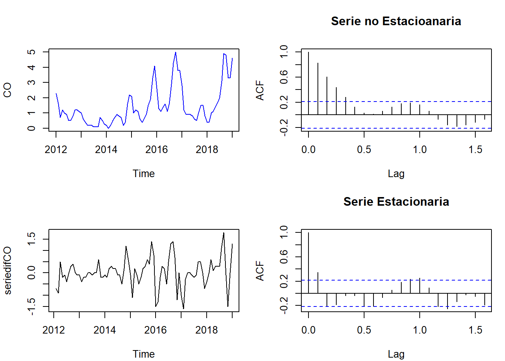

Chapter 3 ACTIVIDAD 3: PROPUESTA AVANCE 3
Continuando con la dinámica de la construcción del documento con repositorio en github, se debe incluir en el documento la descomposición, la estacionariedad y la diferenciación, en caso de ser necesarias, de la variable y/o variables seleccionadas con estructura a través del tiempo. Además, si es necesario, se debe implementar alguna transformación con el fin de controlar la tendencia y la variabilidad, de la misma. Debes justificar, el por qué son o no necesarios dichos procedimientos.
library(readxl)
datos_CentroAltoRendimiento_RMCAB <- read_excel("C:/Users/ALVARO ARIZA/Desktop/Maestria Javeriana/SERIES DE TIEMPO/ACTIVIDAD 7/datos_CentroAltoRendimiento_RMCAB.xlsx",
col_types = c("date", "numeric", "numeric"))
View(datos_CentroAltoRendimiento_RMCAB)## DateTime CO PM2.5
## [1,] 1325376000 2.3 14
## [2,] 1328054400 1.6 19
## [3,] 1330560000 0.7 13
## [4,] 1333238400 1.2 2
## [5,] 1335830400 1.0 2
## [6,] 1338508800 0.9 2plot(Datos.ts, main=" ", ylab="Valor", col="deepskyblue", xlab="Date")
title(main = "DATOS CONTAMINANTES")


3.3 Análisis de Serie Estacionaria y no Estacionaria
par(mfrow=c(2,2), mar=c(4,4,4,1) + .1)
plot(CO, ylab="CO", col="blue")
acf(CO, main="Serie no Estacioanaria")
plot(seriedifCO)
acf(seriedifCO, main="Serie Estacionaria")
par(mfrow=c(2,2), mar=c(4,4,4,1) + .1)
plot(PM2.5, ylab="PM2.5", col="blue")
acf(PM2.5, main="Serie no Estacioanaria")
plot(seriedifPM2.5)
acf(seriedifPM2.5, main="Serie Estacionaria")